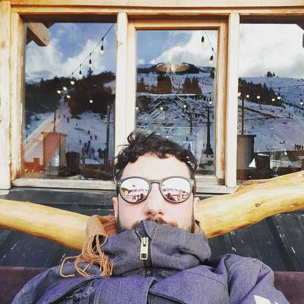
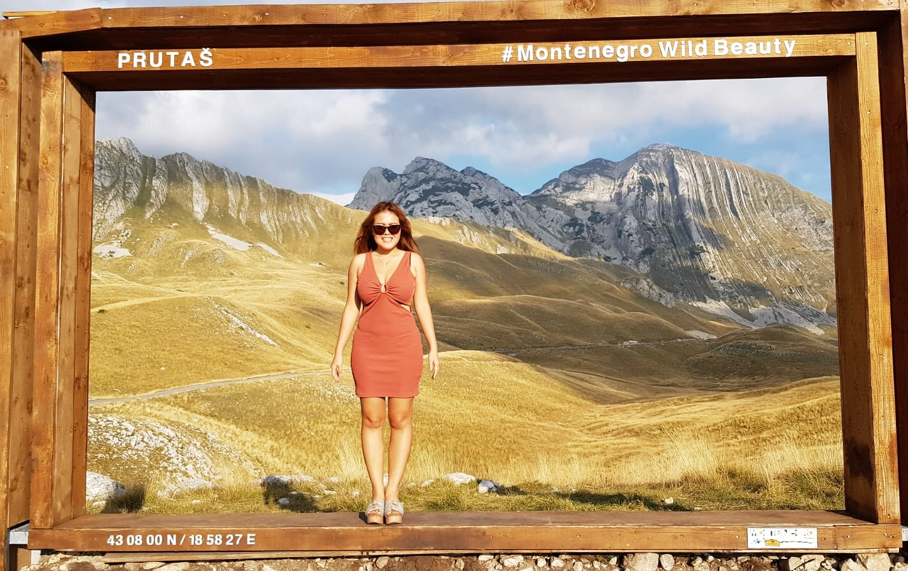
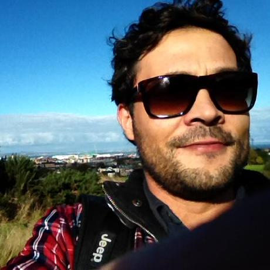

Student's feedbacks
I would like to increase my technical know-how as a Product Manager and learn something new during the COVID19 lockdown.
I like to solve different problems because I think it is fun. The experience I'm having with this course is smooth even though it is a
fully remote course. Marc is an excellent teacher.

I chose Wild Code school because it seemed both casual and serious at once. I don't like too rigorus environments so the lightsome community
was appealing to me and I feel I made the right choice. Ohh, and don't forget about the projects and hackaton that is quite unique on the market
as also the CV and LinkedIn training part of the course.
...
Career change? Yes, it is. I would like to work remotely as the saleries in Hungary are far form the European average and as I plan to spend lots of
time in the Peruvian jungle in complete isolation it is also important to me to have the chance to work as a freelancer and I feel that with coding I can have that freedom that I need.
Keeo open minded and curious and stay playful. Coding is a creative process so, at least for me, it is easier if you treat it as a game.
I have very good experiences here. Great community, good teachers and lots of personal attention not just code related but with anything that comes up and can affect your work.
Read More →

I'm looking for a career change in my life therefore I decided to take the course at Wild Code School.
The experience I'm having with this course: I think it is a good choice. My advice to you is to work hard and code much.
My future plan is to work remotely as a programmer for a company or as a freelancer because I would like to travel around Europe
and around the world.

Because I am born curious, I would like to extend my area of expertise in web design and development. That's the reason I decided to join the front-end developer
course at Wild Code School. As from the day I started, I have not
had a moment of regret. Even though the course is remote, I learn a lot from it. After this course I would like to develop myself
futher and find a great job which allows me to make my passion my work.

It´s been great so far, with a good learning environment, good colleagues and a learning curve that makes you think that you can
just trust the system, even when you think is too hard and you didn´t get it, in two days you will learn another thing and when
you suddenly realize, you know so much more now. My advice will be, Keep the motivation high, don´t doubt yourself ( at some point you will
, but thats fine) ans always keep going, with positive energy. In the end the result will surprise you.

I studied physiotherapy, and when finished, I decided to make a change and started to make programming courses on my own.
Why I choose this course?
At some point, I saw if I want to be a developer, I need to professionalize myself. After a little search, I decided to start this course for some reasons:
the first one is the technologies we study, for me is the most demanded in the job market, another purpose where the learning time you will have in a five-month
Bootcamp, and the last reason was the possibility to work with a real client in a real project.
...
Career change? Of course, this course allows you to learn a lot of necessary tools to work as a developer, like agile methodologies,
git manage versions, take care of the customer needs, work in a group.
Plans: In the future, I would like to work in a startup because I think this can be an excellent opportunity to learn and grow and
at some point, I will want to be a Product Manager.
Advice to the students:
For me, the essential part is patient, at the first moment, you might have the feeling that you are lost, or you will not be able to work as a developer, but with
constancy and dedication, you will find yourself doing huge things in a short period, and this is so satisfying.
Experience with WCS:
One of the things I am glad to decide study in WCS where our learning process, they give us a whole point of view of how to be a developer, the technologies and what are the most important.
Also, they teach us the most modern technics in the language that we use (like Context of Hooks in react), and this is an excellent asset for the future. Another important thing was the team spirit we developed doing hackathons and other activities.
Read More →